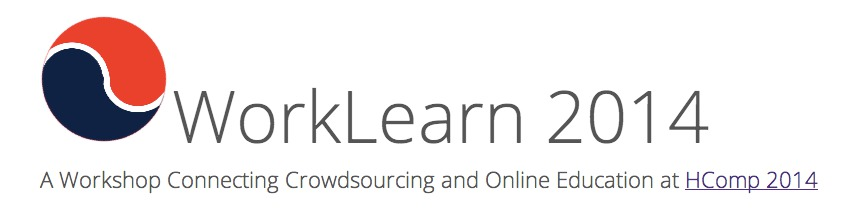

Learning, working and ?
A lot of my recent thoughts have turned around issues of crowdsourcing and online education.
One of my co-authors (Markus Krause) is co-organising a workshop on that topic, WorkLearn 2014. It will take place in Pittsburgh November 2-4, as part of the Human Computation conference HCOMP2014. Human Computation is another expression interchangeable for social machine, although it has different connotations.
The stated motivation of the workshop is very ambitious:
The online education and crowdsourcing communities are addressing similar problems in educating, motivating and evaluating students and workers. The online learning community succeeds in increasing the supply side of the cognitively skilled labor market, and the crowdsourcing at scale community creates a larger marketplace for cognitively skilled work.
Linking online platforms for crowd work with platforms for MOOCs has the potential to: provide knowledge and training at a massive scale to contributors; collect data that identify expert skills; engage contributors in simultaneously working and learning in a social environment; and organize large communities around online courses on specific topics. These all provide new opportunities to support and deploy sophisticated algorithms for crowd learning and work.
The most successful example in this direction is of course Duolingo, which helps translate the web while using volunteer labor by language learners. If one omits the learning, the strategy there is not that different from the strategy used by my Coursera coworker Abraham Bernstein to translate books using Amazon Mechanical Turk, and indeed part of his efforts aim to design effective tools to program those social machines (with the programming language CrowdLang).
I have always had some qualms about the ethics of crowdsourcing, even though it can clearly be used for good: the prototypical success story is in the work of Ushahidi during the 2010 Haiti earthquake. I was thus very happy to see over Labor Day 2014 that Michael Bernstein from Stanford announced guidelines for academic requesters on Amazon Mechanical Turk. He explains the rationale for this (a Turker is a worker on a crowdsourcing platform):
An IRB-approved researcher experimented on the [crowdsourcing] platform unannounced. The result was Turker confusion, strife, and wasted time, in a system where time is what it takes to make ends meet.
These guidelines were themselves crowdsourced, designed together with the Turkers (it's only natural!).
At the same time, over the summer, there was a huge controversy over the iffy ethics of social platforms experimentation. This is due to the release at the very end of June 2014 of a Facebook experiment on its users (don't miss the Cornell IRB flowchart there). There are a ton of links about this, but the best is probably the account by Mary L. Gray of an ethics panel that took place at the Microsoft Research Faculty Summit (and unfortunately was published with much delay).
In any case, this should give serious pause to any educator. One can see lots of fields suddenly getting much too close, with very different or inexistent values. Online learners, just as Turkers, are vulnerable. Martin Weller and George Siemens have recently insisted on this.
So, what do you think? Anyone wants to submit a position paper (2 pages) on the topic? Any of my co-learners in MOOCs would like to see what we can do? We could, well... crowdsource it...
(of course, this was due yesterday: official deadline is "September")
Comments
Comments powered by Disqus